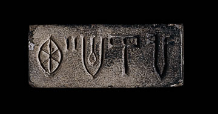

Indus script no longer usedIt is difficult to work out exactly when Indus Valley inscriptions were written. Thus, archaeologists are not completely sure of when the Indus script was last used. 
However, it is clear that there is a steady decline in the number of inscribed objects found in the later levels of Indus Valley sites. Indus script was probably not used after about 1700 B.C. |